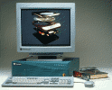

Indigo2

Indigo2 er en arbeidsstasjon for 3D.
En Indigo2 kan ha opptil 640 MB RAM og 3 stk interne Fast SCSI 2 enheter (f.eks. 4 GB disk, CD-ROM og DAT).
- Prosessorer
- Grafikk
- I/O
- Porter
- Ytelse
Indigo2 arbeidsstasjoner leveres med følgende prosessorer :
- 133 MHz R4600SC (512 KB sekundær cache)
- 200 MHz R4400SC (1 MB sekundær cache)
Indigo2 arbeidsstasjoner leveres med følgende grafikk :
- 24 bits XL grafikk
- 24 bits XZ grafikk (4 Geometry Engine grafikk akselratorer, 128 MFLOPS)
- 24 bits Extreme grafikk (8 Geometry Engine grafikk akselratorer,
256 MFLOPS)
En Indigo2 kan også utstyres med 2 monitorer.
Indigo2 arbeidsstasjoner har en systembuss på hele 267 MB/s.
Båndbredden mellom CPU og memory er på hele 400 MB/s.
En Indigo2 arbeidsstasjon har følgende porter :
- 2 serielle porter (38,4 Kb/s)
- 1 parallell port (400 Kb/s)
- 2 Fast SCSI 2 port
- 1 AUI ethernet (tykk) eller 1 Twisted-Pair (10-base T) ethernet
- Port for stereobriller
- 5 inn/ut porter for lyd (hodetelefoner/mikrofon/høytaler m.m.)
- Monitor
- 2 ekstra GIO slots til ytterligere enheter eller 4 EISA slots
Dette er kun noen av de vanligste ytelsestallene for arbeidsstasjoner :
133 MHz R4600SC
- AIM, 104
- SPECfp, 73
- SPECint, 109
200 MHz R4400SC
- AIM,
- SPECfp, 119
- SPECint, 131
Retur til Maskinvare siden.
Oppdatert, 6. juni 1995